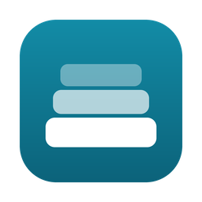

Copied, then buried.
You copied an address an hour ago. Since then you copied a terminal command, a link and an email. macOS kept only the last one.
Stash saves every copy: text, links, code, colors and images, with the app it came from.

StashHi María! Thanks for showing me the room.
My address is
Try it: press ⌘⇧V, then a number.
Stash keeps your clipboard history and opens it at your text cursor. Press ⌘⇧V, pick a number, done. Your normal ⌘V still works exactly as before.
v0.1.0 · .dmg · about 6 MB · macOS 11+ on Apple Silicon and Intel · free and open source (MIT)
You copied an address an hour ago. Since then you copied a terminal command, a link and an email. macOS kept only the last one.
Stash saves every copy: text, links, code, colors and images, with the app it came from.
Press ⌘⇧V in any app. The menu opens under the line you're typing, not in some window across the screen. Press 2 and the address is pasted.
Some things you type every week: your email, your address, a server login. Pin them with ⌘P. Each pin gets a slot, and ⌃⌥2 pastes it from anywhere, without opening anything.
⌃⌥V pastes the copy before your current one. Press it again to switch back.
The full window holds your whole history. Search across all of it, filter by kind, preview before pasting, and fix a typo with ⌘E first.
Deleted something by mistake? ⌘Z brings it back.
~/Library/Application Support. No account, no sync, no analytics.| ⌘⇧V | Open the paste menu at your cursor |
| ⌃⌥1–9 | Paste pinned item 1–9 |
| ⌃⌥V | Paste the copy before the current one |
| ⌘V | Unchanged: pastes your latest copy |
| 1–9 | Paste that item |
| ↑↓↵ | Choose and paste |
| ⇧↵ | Copy only |
| ⇥ | Switch Recent / Pinned |
| ⌘O | Open the full window |
| ⌘1–9 | Quick paste |
| ⌘P | Pin or unpin |
| ⌘E | Edit before pasting |
| ⌘⌫ | Delete (⌘Z to undo) |
| ⇥ | Next filter |
Change the main shortcut any time in Settings: click the field and press a new key combination.
You need Rust and Node.js. Stash is about 1,600 lines of Rust and plain JavaScript on Tauri 2.
$ git clone https://github.com/HusDev/stash.git
$ cd stash
$ npm install
$ npm run buildThe app lands in src-tauri/target/release/bundle/macos/Stash.app. Run npm run dev while hacking on it.